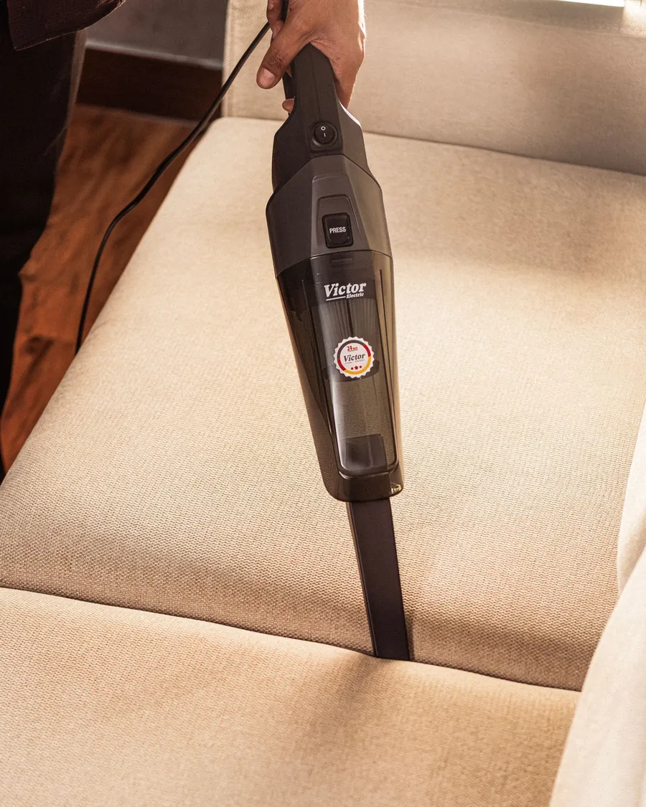
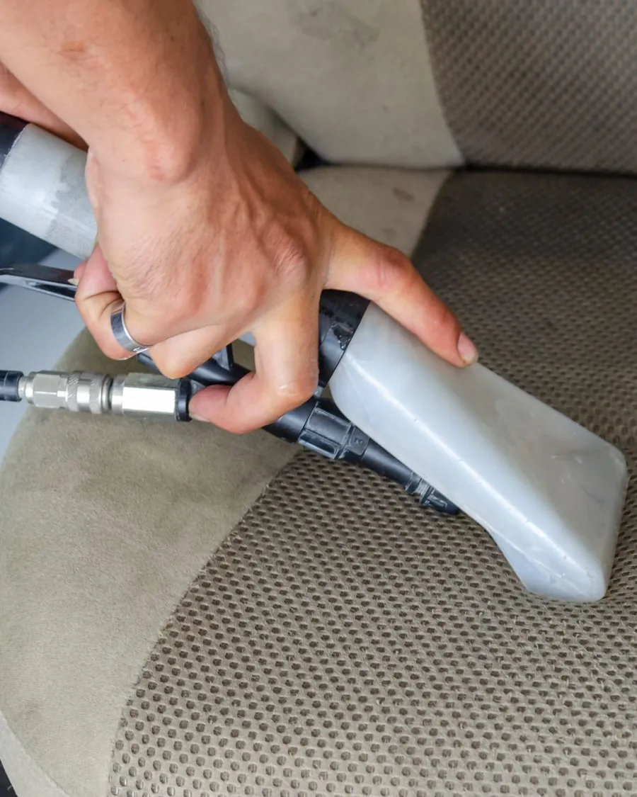

Cinco passos e o sofá fica lavado
É mais fácil do que parece: quem sabe usar um aspirador sabe usar esta máquina. Estes são os passos que explicamos na entrega, para poder ver com calma antes ou durante a limpeza.
Antes de começar: os comandos
A máquina tem dois interruptores: um liga a aspiração, o outro liga a bomba da água. No punho está o gatilho: enquanto o apertar, sai água com detergente pelo bocal; quando o solta, a máquina só aspira. É só isto que precisa de saber.


Aspire primeiro, a seco
Com o seu aspirador normal de casa, aspire bem o sofá ou o colchão: migalhas, pelos e pó solto. A máquina trata do que está dentro da fibra, não do que está solto por cima.
Prepare a solução: 4 litros + 1 pastilha
Encha o balde branco com 4 litros de água morna, junte 1 pastilha de detergente e despeje no depósito de água limpa da máquina. 1 pastilha e 4 litros chegam para um sofá de 3 lugares.
Borrife tudo e deixe atuar 5 minutos
Ligue só o interruptor da bomba e, com o gatilho apertado, borrife o tecido todo. Deixe o detergente trabalhar uns 5 minutos, sem deixar secar. Nódoas antigas ou difíceis: aplique o spray tira-nódoas, espere o tempo do rótulo (uns 5 minutos) e esfregue suavemente com uma escova macia.
Extraia em faixas, devagar
Agora ligue os dois interruptores. Encoste o bocal ao tecido e, com o gatilho apertado, puxe para si em faixas direitas e sobrepostas, como quem corta relva. Em zonas muito sujas, faça uma segunda passagem cruzada com a primeira. No fim, solte o gatilho e repita as passagens só a aspirar, para tirar o máximo de água.
Deixe secar com a janela aberta
Entre 4 e 8 horas, conforme o tecido e o arejamento. O colchão convém lavar de manhã, para a cama se poder fazer à noite.
Os três bocais, para que servem
- Bocal largo, de 240 mmChão, tapetes e alcatifas
- Bocal de estofos, de 110 mmSofás e colchões
- Bocal de mãoCarro, cantos e fendas
As medidas, sem contas
- Sofá de 3 lugares, colchão de casal ou tapete de sala4 L + 1 pastilha
- Dois desses no mesmo dia8 L + 2 pastilhas
- ÁguaMorna, nunca a ferver
Lembrete: a máquina não serve para pele, camurça, veludo nem seda. Na dúvida, mande-nos uma fotografia da etiqueta e nós dizemos se é possível lavar ou não.
Dois minutos de demonstração e fica com estas instruções sempre à mão. Reserve a máquina e o resto é connosco.
Pedido de reserva